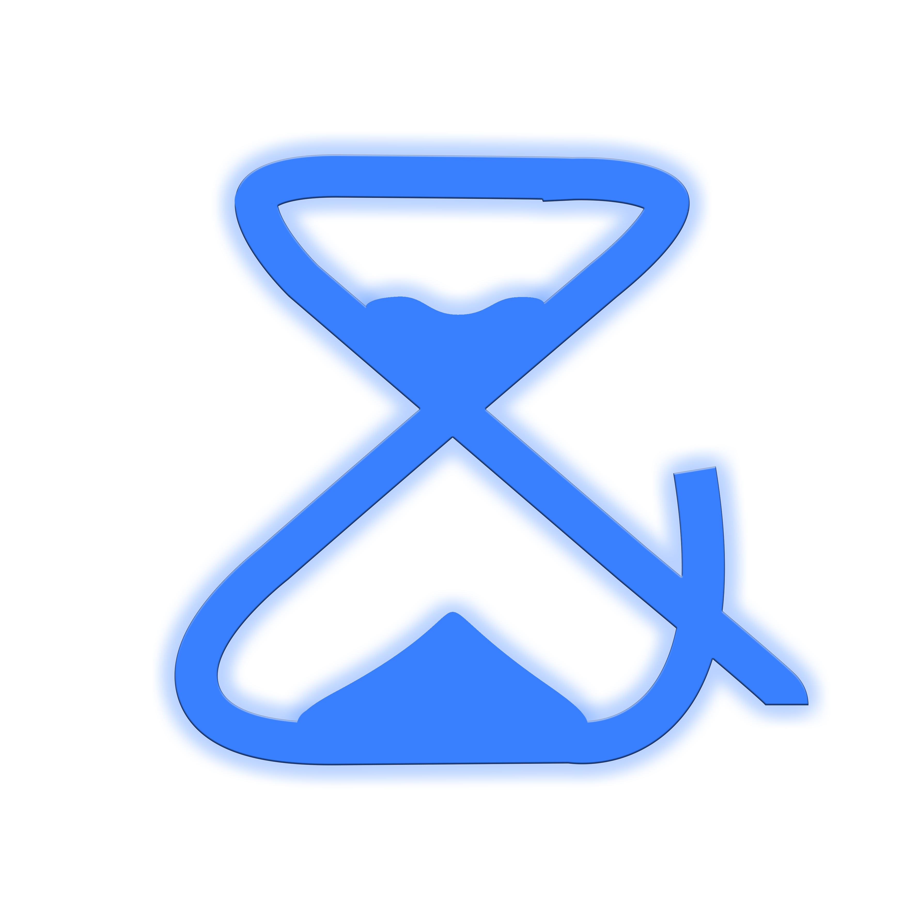

<ion-header>
  <ion-toolbar>
    <div class="center">
      
       </div>
      
  </ion-toolbar>
</ion-header>

<ion-content>

    <ul>
    <li *ngFor="let c of cajas;let i = index">
      <div id="container">
        <div id = "name">{{c.nombre}}</div>
        <div id = "time">{{c.countingValue}} </div>
        <div id = "buttons">
          <ion-button (click)="playpauseButton(i)"><ion-icon name="play-outline"></ion-icon></ion-button>
          <ion-button (click)="resetButton(i)"><ion-icon name="refresh-outline"></ion-icon></ion-button>
          <ion-button (click)="deleteButton(i)"><ion-icon name="construct-outline"></ion-icon></ion-button>
        </div>
      </div>
    </li>
  </ul>

  <ion-fab vertical="bottom" horizontal="end" slot="fixed">
    <ion-fab-button (click)="createCajaAlert()">
      <ion-icon name="add"></ion-icon>
    </ion-fab-button>
  </ion-fab>
  

</ion-content>
